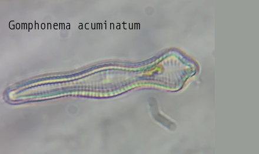
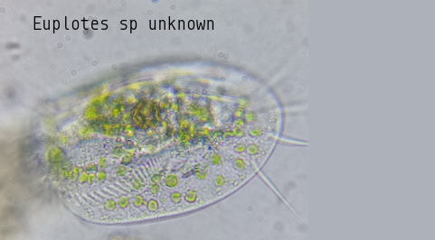

-

Cladonia cervicornis ssp. verticillata
Cladonia cervicornis ssp. verticillata, also known as ladder lichen, is a cup lichen that is similar to Cladonia cervicornis but has distinct features. Color: Cladonia verticillata is a paler green-grey color, while Cladonia cervicornis is browner. Podetia: Cladonia verticillata has podetia with cups that are arranged in tiers, often stacked in scaffolds of two or three. Cladonia cervicornis has fewer podetions and never multi-storey. Basal squamules Cladonia verticillata has rounded and short basal squamules. Cladonia cervicornis has longer, more indented basal squamules. Habitat: Cladonia verticillata is found in more acidic and damper habitats than Cladonia cervicornis. It is typically found on sandy soil in aerohaline healthlands. Cladonia species are economically important to reindeer-herders and some species can be used to create antibiotic cream.
-

Urceolus cyclostomus
Urceolus cyclostomus is a species of flagellate, a single-celled protist that exhibits an emergent flagellum for movement. Members of the genus Urceolus are distinguished by the presence of a 'neck' at the anterior end of their oval-shaped cell, followed by a wide aperture or 'mouth' into a deep canal where the feeding groove and the flagellum originate. In addition, like other euglenids, the cell surface or pellicle is spiral-striped. In particular, U. cyclostomus is distinguished from other species of the genus by its more or less rigid and regular body shape, a less developed 'ingestive organelle' or feeding apparatus, and a more conspicuous 'hatching' (i.e. more pronounced stripes) of the pellicle. The posterior end of the cell is narrow, as is common in other euglenids. The cells are ovate, measuring 14–30 μm long and 4–18 μm wide. The cells move by crawling through the substrate, with the posterior end raised. The flagellum is around 1.5 times longer than the cell itself, 40–50 μm.
-

Gomphonema acuminatum
Valves clavate, tumid at the center with two constrictions along the margin; at the headpole the valve is broad and then becomes apiculate at the headpole, the footpole is rounded. The axial area is narrow, straight, until broadening to form an irregular central area. The raphe is lateral and undulate. -
Cladonia pyxidata
Podetia 0.5–1.5 (–3) cm tall, grey, occasionally ± brownish; cups 3–10 mm diam., ± regular, rarely proliferating from the rim, tapering regularly towards the base, stalk very short or hardly present; surface uneven with coarse, smooth, corticate granules, particularly well-developed within the cups, often with scattered, partially decorticate pale areas; soredia absent. Basal squamules often rather small, rounded or elongate, with few indentations, sparse or often abundant, becoming ± erect. Apothecia and pycnidia brown, common, on cup rim; apothecia often shortly elevated. Thallus C–, K–, KC– , Pd+ red, UV– (fumarprotocetraric acid).
-

Ambystoma maculatum
The spotted salamander or yellow-spotted salamander (Ambystoma maculatum) is a mole salamander common in eastern United States and Canada. It is the state amphibian of Ohio and South Carolina. The species ranges from Nova Scotia, to Lake Superior, to southern Georgia and Texas. Its embryos have been found to have symbiotic algae living in and around them, the only known example of vertebrate cells hosting an endosymbiont microbe (unless mitochondria are considered).
-

Euplotes sp unknown
Euplotes cells are inflexible, dorsoventrally flattened, and roughly ovoid, with a very large oral region (peristome) bordered on the left by a long "adoral zone of membranelles" (AZM). Like other spirotrich ciliates, Euplotes move and feed with the help of compound ciliary organelles called "cirri," made up of thick tufts of cilia sparsely distributed on the cell. Strong cirri on the ventral surface of the cell enable Euplotes to walk or crawl on submerged detritus and vegetation. All species of Euplotes have a group of stiff bristles (caudal cirri), which protrude from the posterior of the cell. The number of caudal cirri varies, even within a species, but it is most common for Euplotes to have 4 or 5. The macronucleus is typically long and narrow, and approximately horseshoe-shaped, C-shaped, or resembling the number 3.